시작하기
설치
macOS 11 이상의 맥(Apple Silicon·인텔)과 윈도우 10·11 (64비트)에서 돌아갑니다. 인텔 맥은 홈페이지 맥용 다운로드 단추 아래의 인텔 맥용을 받습니다.
- 맥 — 내려받기에서 .dmg를 받아 열고, HyperSeven Office 를 응용 프로그램 폴더로 끌어 놓습니다.
- 윈도우 — .exe를 받아 실행하면 바로 설치되고 앱이 뜹니다. 내 계정에만 깔려 관리자 권한이 필요 없고, 바탕 화면과 시작 메뉴에 바로 가기가 생깁니다. 설치 없이 쓰려면 .zip을 풀어 HyperSeven Office.exe 를 실행합니다.
- 윈도우 — 내려받기의 윈도우용 다운로드를 누르면 Microsoft Store에서 설치하고 새 버전도 자동으로 받습니다. 그 아래 설치 파일로 받기 (.exe)로 설치해도 됩니다 — 내 계정에만 깔려 관리자 권한이 필요 없고, 바탕 화면과 시작 메뉴에 바로 가기가 생깁니다.
처음 열 때
설치 파일(.exe)로 설치했을 때 “Windows의 PC 보호” 창이 뜨면 추가 정보 → 실행을 누릅니다. Microsoft Store에서 설치하면 이 창 없이 바로 열립니다.
윈도우에서 “Windows의 PC 보호” 창이 뜨면 추가 정보 → 실행을 누릅니다. 아직 코드 서명 인증서가 없어서 뜨는 창입니다.
맥에서 인터넷에서 받은 앱을 열지 묻는 창이 나오면 열기를 누릅니다.
업데이트
앱을 켜면 곧바로, 그 뒤로는 6시간마다 새 버전이 있는지 확인합니다. 새 버전이 있으면 ‘새 버전’ 창이 뜨고 상태 표시줄에도 표시됩니다. 창에서 내려받기 페이지 열기, 나중에, 이 판은 건너뛰기 가운데 고릅니다.
- 설치 파일을 다시 받지 않아도 되는 고침은 ‘새 기능’ 창으로 알립니다. 지금 다시 시작하거나 다음에 켤 때 적용됩니다.
- 꼭 고쳐야 하는 문제가 있을 때만 닫을 수 없는 업데이트 창이 뜹니다. 이때는 저장하고 종료로 문서를 지킨 뒤 새 버전을 받습니다.
- 직접 확인하려면 맥 앱 메뉴의 또는 을 고릅니다.
- 새 설치 파일로 응용 프로그램 폴더의 앱을 바꿔 넣어도(윈도우는 새 .exe를 실행해 그 위에 설치해도) 문서와 설정은 그대로입니다.
화면 둘러보기
위에서부터 메뉴 막대, 도구 상자, 서식 도구 모음, 문서 탭, 편집 화면과 작업 창, 상태 표시줄이 차례로 있습니다.
- 신호등 — 메뉴 막대 왼쪽의 글(파랑)·셈(초록)·발표(주황)는 지금 문서의 종류를 색으로 알려 줍니다. 누르면 그 종류의 열린 문서로 가고, 없으면 새로 만듭니다. Shift를 누른 채 누르면 늘 새로 만듭니다.
- 메뉴 막대 오른쪽에 명령 찾기 · AI · 단축키 · 작업 창 · 응원 단추와 로그인이 있습니다. 왼쪽 로고를 누르면 앱 정보가 열립니다. 매뉴얼은 로 엽니다.
- 메뉴는 문서 종류에 따라 바뀝니다. 글 문서, 셈, 발표가 각자 메뉴를 쓰고, 표 안에서는 ‘표’, 개체를 고르면 ‘개체’, PDF 에서는 ‘PDF’ 메뉴가 더 붙습니다.
- 서식 도구 모음에는 스타일, 글꼴, 크기, 진하게·기울임·밑줄·취소선·위/아래 첨자, 글자 색, 형광펜, 정렬, 줄 간격, 문단 번호와 글머리표가 있습니다.
- 문서 탭은 문서가 둘 이상 열리면 나타납니다. 형식(HWP·PDF 등)과, 고친 뒤 저장하지 않은 문서에는 ● 표시가 붙습니다. 탭이 많으면 좁아지고, 지금 문서의 탭은 늘 보입니다.
- 첨삭 펜 — 문서 창 오른쪽 아래의 펜 단추로 문서 위에 긋고 칠합니다. 화면에만 남고 인쇄·저장 파일에는 들어가지 않습니다.
- 작업 창에는 개체 · 표 · 서식 · 스타일 · 개요 탭이 있습니다. 으로 켜고 끕니다.
- 명령 찾기 ⌘K — 메뉴가 어디 있는지 몰라도 이름이나 초성 몇 자로 명령을 찾아 바로 실행합니다. 하이퍼세븐의 다른 도구에서도 같은 키입니다.
- 상태 표시줄은 쪽·단·줄·칸·구역, 삽입/수정 상태와 확대 막대(10~400%)를 보여 줍니다. 쪽 칸을 누르면 찾아가기가 열립니다.
메뉴 항목이나 도구 단추를 오른쪽 단추로 누르면 그 기능의 단축키를 바로 바꿀 수 있습니다. 화면을 어둡게 쓰려면 에서 고릅니다.
따라 하기
자주 하는 일을 처음부터 끝까지 따라 합니다. 여기 적힌 순서와 그림은 앱을 새로 낼 때마다 실제 앱에서 그대로 해 보고 다시 찍습니다.
공문 한 장 쓰기
제목을 크게 가운데로 두고, 쪽 번호를 넣고, 한글 파일과 PDF 로 저장합니다.
새 문서에 제목과 본문을 칩니다. Enter 를 한 번 누를 때마다 문단이 하나 생깁니다.
제목을 끌어서 고른 뒤 서식 도구 모음에서 진하게를 누르고, 글자 크기 칸에 20 을 넣고, 가운데 정렬을 누릅니다.
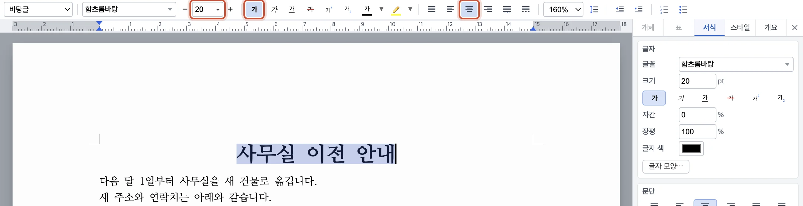
를 누르고, 번호 자리와 모양을 고른 뒤 넣기를 누릅니다.
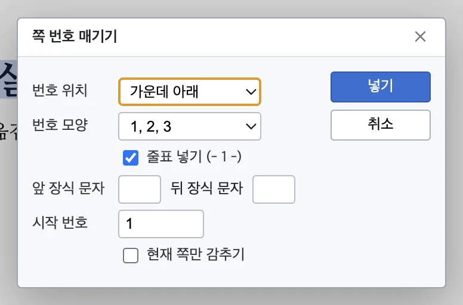
⌘S(윈도우는 Ctrl+S)로 저장합니다. 처음 저장할 때 이름과 형식(HWP·HWPX·DOCX)을 고릅니다. PDF 는 로 만듭니다.
- 자주 쓰는 공문 틀은 에서 골라 시작합니다.
- 한컴오피스 한글의 단축키 대부분이 그대로 됩니다. 모든 단축키는 에서 봅니다.
받은 한글 파일 고쳐 워드로 보내기
HWP·HWPX·DOCX 파일을 바로 열어 고치고, 받는 사람이 쓰는 형식으로 저장합니다. 서식은 그대로 남습니다.
파일을 두 번 누르거나 앱 창에 끌어다 놓거나, ⌘O(윈도우는 Ctrl+O)로 엽니다. 위쪽 신호등은 지금 문서의 종류(글·셈·발표)를 색으로 알려 줍니다.
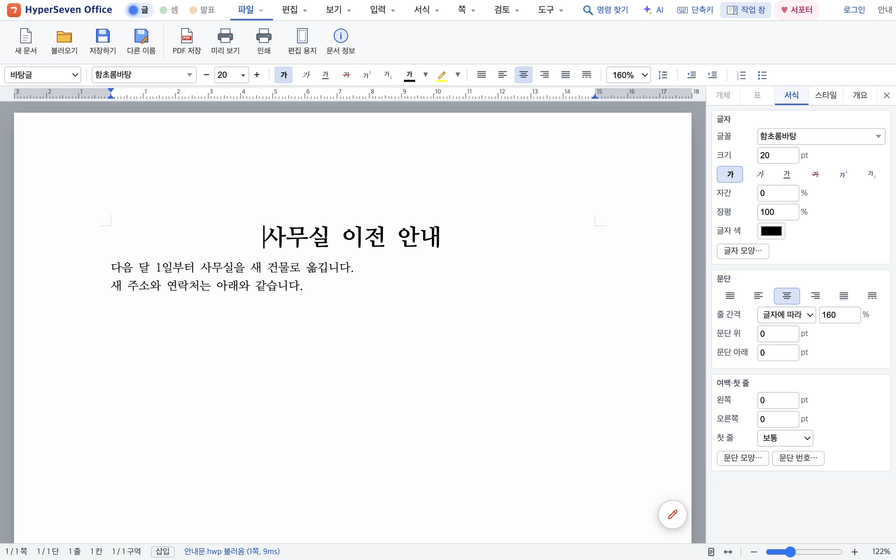
고칠 곳을 눌러 그대로 씁니다. ⌘S 를 누르면 받은 형식(HWP) 그대로 저장됩니다.
워드로 보낼 때는 를 고릅니다. 원래 HWP 파일은 그대로 남습니다.
- 같은 내용을 PDF·HTML·TXT·그림(PNG)으로도 저장할 수 있습니다. 모두 에 있습니다.
- 암호가 걸린 문서도 엽니다. 암호를 물으면 넣습니다.
표 넣고 채우기
표 단추의 격자에서 크기를 고르고, Tab 으로 칸을 옮겨 가며 채웁니다.
메뉴 막대의 입력을 눌러 도구 상자를 바꾸고 표 단추를 누릅니다. 격자에서 원하는 크기(여기서는 3 × 2)를 누릅니다.
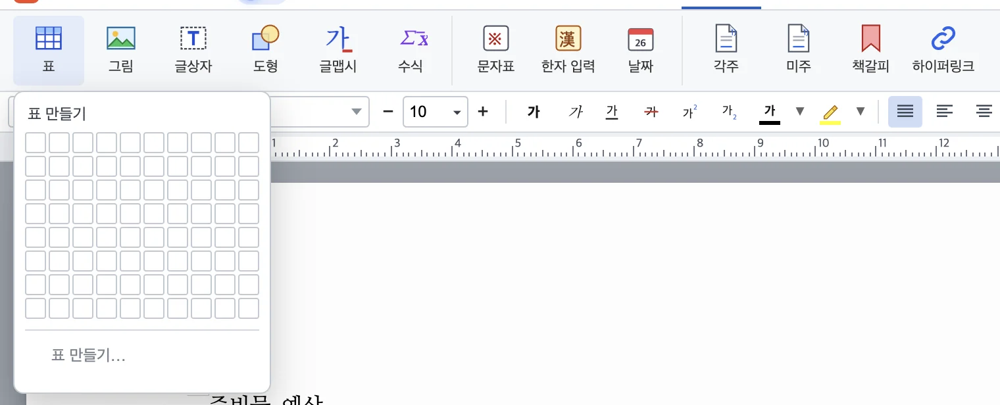
글을 치고 Tab 을 누르면 다음 칸으로 갑니다. 마지막 칸에서 Tab 을 누르면 줄이 하나 늘어납니다.
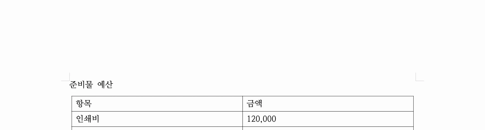
- 표 안을 누르면 메뉴 막대에 표 메뉴가 생깁니다. 줄·칸 넣기, 셀 합치기, 계산식이 거기 있습니다.
- 한글처럼 F5 로 셀 블록을 잡고 M 을 누르면 셀이 합쳐집니다.
- 탭이나 쉼표로 나눈 글은 로 한 번에 표가 됩니다.
맞춤법 고치기
흔한 틀림은 띄어 쓰는 순간 저절로 고쳐지고, 나머지는 빨간 밑줄로 보입니다.
몇일 처럼 자주 틀리는 말은 띄어 쓰면 바로 며칠 로 바뀝니다.
빨간 밑줄이 그어진 말을 오른쪽 클릭하면 고칠 말이 위에 나옵니다. 골라 누르면 바뀝니다.
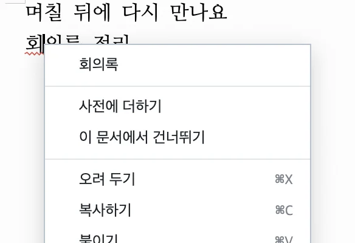
- 문서 전체는 으로 한 번에 봅니다.
- 맞는 말인데 밑줄이 그어지면 오른쪽 클릭 › 사전에 더하기로 내 사전에 넣습니다.
첨삭 펜으로 표시하기
종이에 빨간펜으로 쓰듯 문서 위에 긋고 칠합니다. 첨삭은 화면에만 남고 인쇄·저장 파일에는 들어가지 않습니다.
문서 창 오른쪽 아래의 펜 단추나 을 누르면 펜 도구가 나옵니다. 빨간펜·형광펜·지우개와 색을 고릅니다.
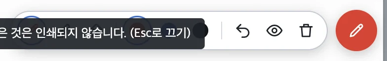
고칠 말 아래를 끌어 긋습니다. 획은 그 글에 붙어 있어서 글이 밀려도 따라갑니다. Esc 를 누르면 펜이 꺼집니다.
- 첨삭을 한 채로 하이퍼 AI 에게 '첨삭대로 고쳐 줘'라고 하면, 그은 자리를 읽고 고칠 안을 냅니다.
- 인쇄할 때 첨삭도 함께 찍으려면 인쇄 창에서 첨삭 함께 찍기를 켭니다.
합계와 함수 넣기
칸에 = 를 치고 함수 이름을 몇 글자만 치면 목록이 뜹니다. 함수를 고른 뒤 칸을 끌면 범위가 들어갑니다.
품목과 금액을 넣습니다. Tab 을 누르면 오른쪽 칸으로, Enter 를 누르면 다음 줄의 처음 칸으로 갑니다.
B5 에서 = 를 치고 SU 까지 치면 함수 목록이 뜹니다.
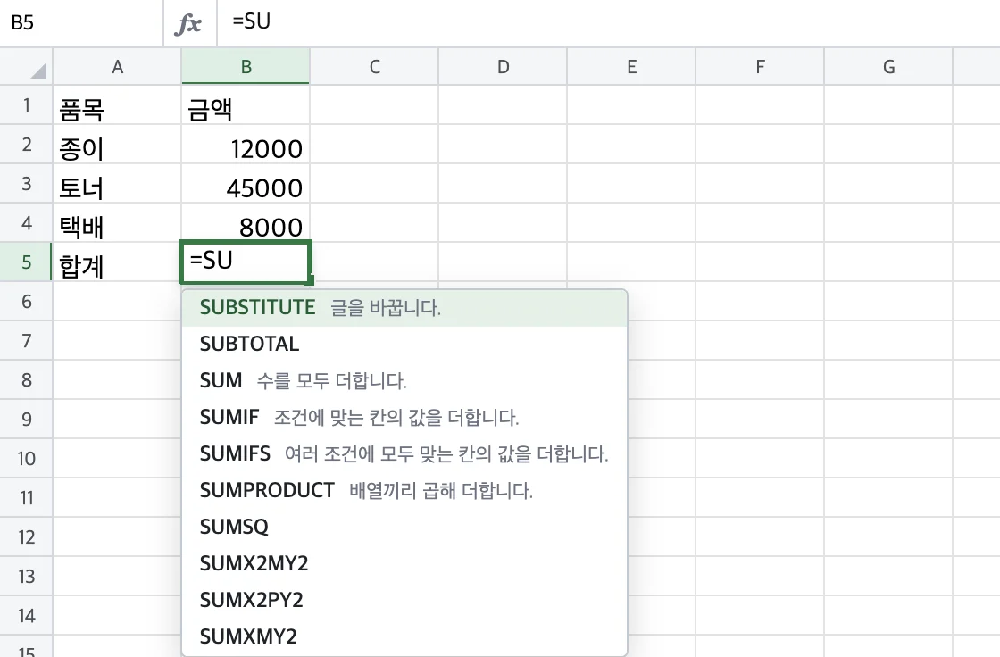
목록에서 SUM 을 누르면 =SUM( 이 들어갑니다. 그대로 B2 부터 B4 까지 끌면 범위가 들어갑니다. 칸 위의 안내도 이렇게 알려 줍니다.
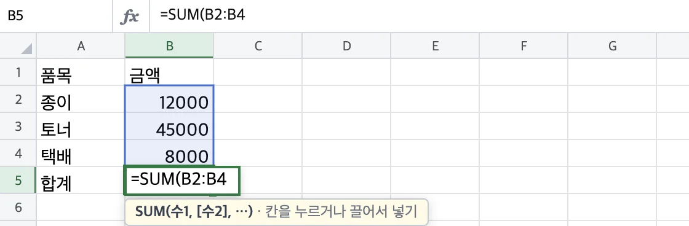
Enter 를 누르면 합계가 나옵니다. 닫는 괄호는 앱이 채웁니다. 금액을 고치면 합계도 저절로 다시 계산됩니다.
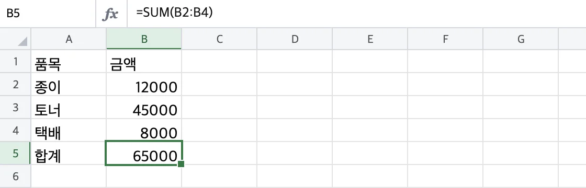
- 숫자 아래 빈칸을 고르고 를 누르면 =SUM(…) 이 저절로 들어갑니다.
- 어떤 함수가 있는지 모르면 에서 찾아 고릅니다.
- 한글 입력 상태로 =ㄴㅕㅡ 처럼 쳐도 =SUM 으로 바로 바뀝니다. 따옴표 안의 한글은 그대로 둡니다.
차트 만들기
표를 골라 차트 종류를 누르면 바로 그려집니다. 값을 고치면 차트도 따라 바뀝니다.
머리글과 값을 넣고 A1 부터 B5 까지 끌어 고릅니다.
을 누릅니다. 차트를 끌어 옮기고, 모서리를 끌어 크기를 바꿉니다.
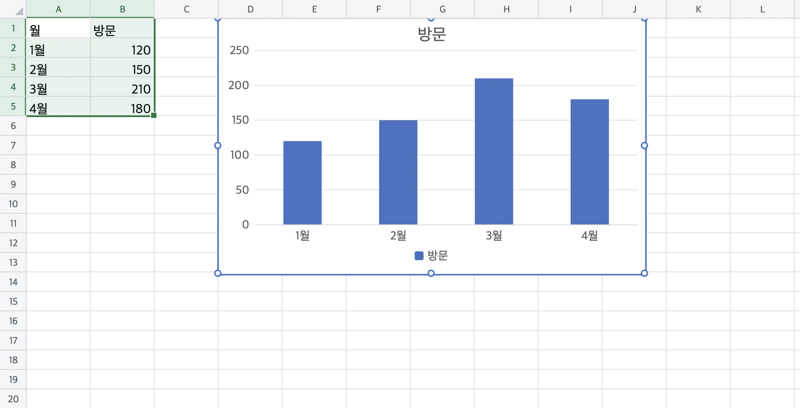
- 차트를 고른 뒤 에서 종류·제목·범례를 바꿉니다.
- 셈의 표나 차트를 글 문서·발표에 붙일 때 를 쓰면, 셈에서 값을 고칠 때 함께 바뀝니다.
새 발표 만들기
위쪽 신호등의 발표를 누르면 새 발표가 바로 열립니다. 제목 칸을 한 번 누르고 바로 씁니다.
제목 칸과 부제목 칸을 누르고 그대로 씁니다.
에서 마음에 드는 테마를 고르고 바꾸기를 누릅니다. 언제든 다시 바꿀 수 있습니다.
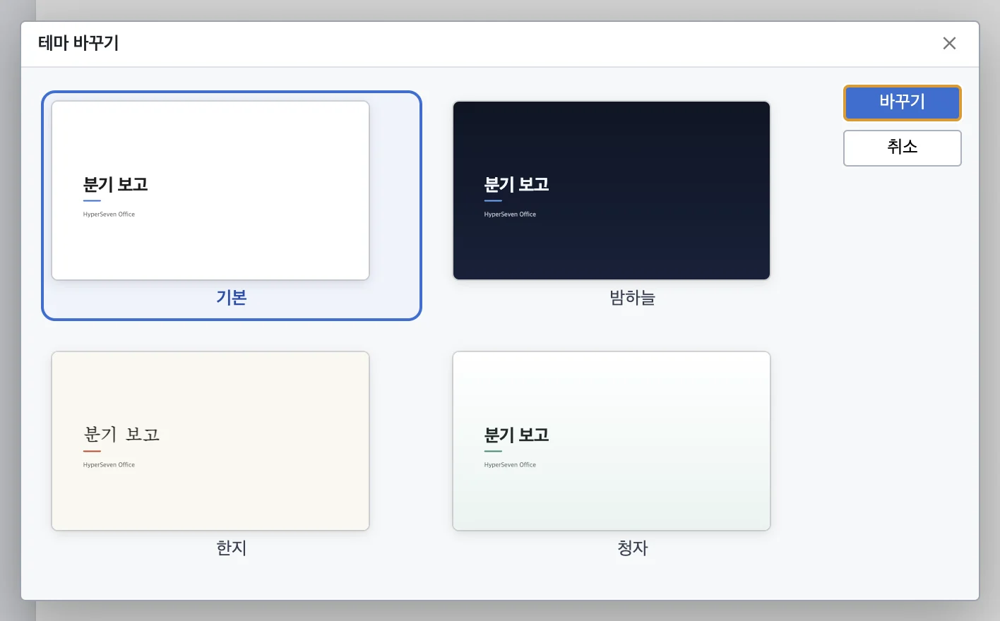
를 누르고 내용 칸에 씁니다. Enter 를 누를 때마다 글머리표 한 줄이 생기고, Tab 을 누르면 한 수준 들어갑니다.
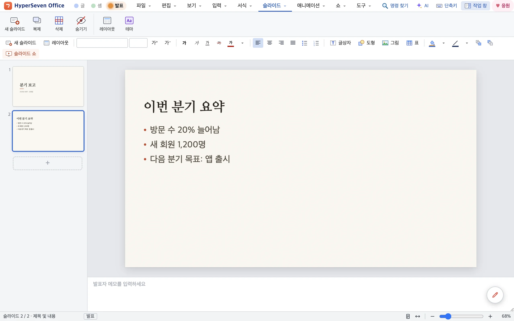
(F5)로 발표를 시작합니다. 화살표 키나 누르기로 넘기고, Esc 로 끝냅니다.
- 글 문서를 발표로 바꾸려면 글 문서에서 를 누릅니다. 제목마다 슬라이드가 생깁니다.
- 개체가 겹쳐 아래 것이 안 눌리면 ⌥ 를 누른 채 누르면 차례로 아래 개체가 골라집니다.
받은 PDF 고치고 서명하기
PDF 의 글을 그 자리에서 고치고, 손글씨 서명을 넣어 저장합니다. 한글이나 워드로 바꾸지 않아도 됩니다.
PDF 를 열면 메뉴에 PDF 가 붙고, 도구 모음이 PDF 도구로 바뀝니다.
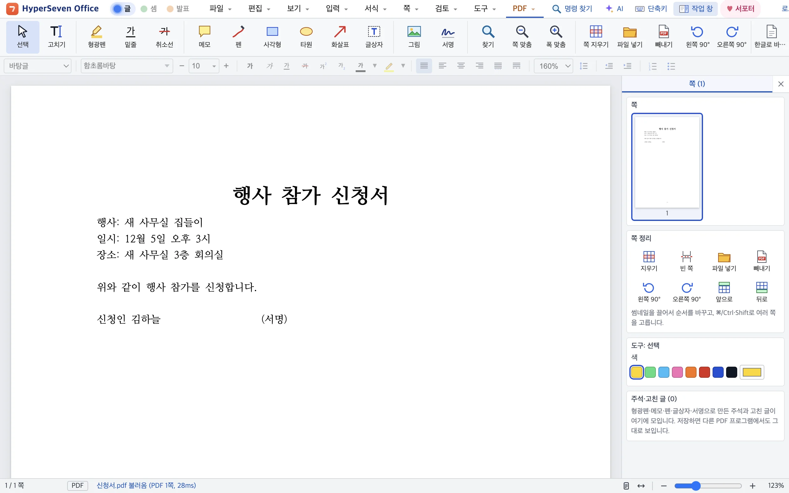
글을 고치려면 를 고르고 고칠 글을 누릅니다. 그 자리에 같은 글꼴과 크기의 편집 칸이 열리고, 누른 자리에 커서가 놓입니다. 다 고쳤으면 바깥을 누르거나 ⌘Enter 를 누릅니다.
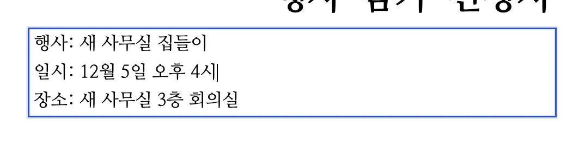
서명은 를 누르고, 손글씨 칸에 마우스나 트랙패드로 서명한 뒤 놓기를 누릅니다. 이름을 쳐서 손글씨 글꼴로 만들거나, 도장 그림을 써도 됩니다. 만든 서명은 기억해 두었다가 다음에 바로 씁니다.
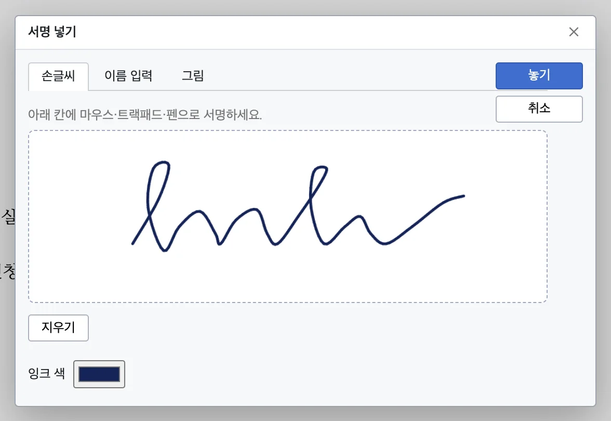
서명을 놓을 자리를 누릅니다. 놓은 서명은 끌어서 옮기고, 모서리를 끌어 크기를 바꿉니다.
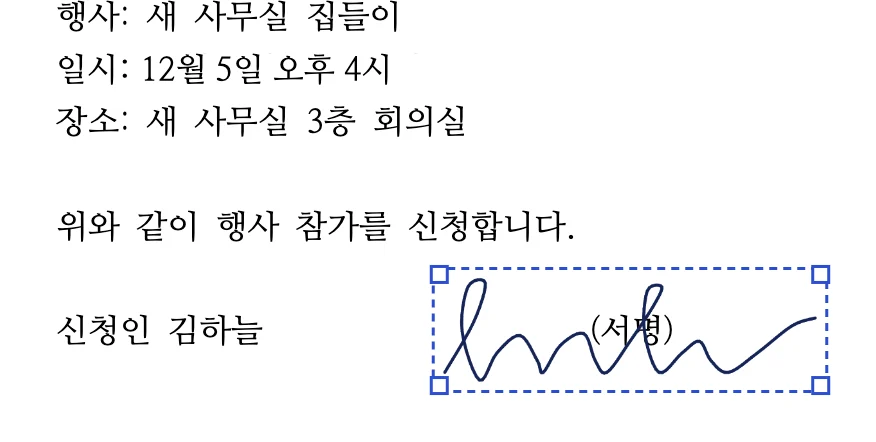
⌘S(윈도우는 Ctrl+S)로 저장합니다. 고친 글과 서명이 PDF 안에 들어가, 다른 PDF 프로그램에서도 똑같이 보입니다.
- 형광펜·밑줄·취소선은 칠할 글을 끌어 고른 뒤 에서 고릅니다. 메모·펜·도형·글상자도 메뉴에 있습니다.
- 쪽 지우기, 다른 PDF 의 쪽 넣기(합치기), 고른 쪽만 새 PDF 로 빼내기는 에 있습니다.
- 많이 고쳐야 하면 로 글 문서로 바꿔 자유롭게 고칩니다.
- 스캔한 쪽과 세로쓰기 글은 고칠 수 없습니다. 암호가 걸린 PDF 는 볼 수만 있습니다.
하이퍼 AI 켜기
하이퍼 AI 는 문서를 읽고 고칠 안을 냅니다. 내 Claude API 키, 내 컴퓨터의 AI 모델(올라마), 둘 중 하나로 연결합니다.
메뉴 막대의 AI 단추나 로 오른쪽에 하이퍼 AI 창을 엽니다.
창 위의 톱니(⚙)를 누르면 연결 화면이 나옵니다. 로그인(애플·구글·카카오)하고 내 Claude API 키를 넣거나 내 컴퓨터 모델을 고르면 바로 씁니다.
내 컴퓨터 모델은 창 아래 단계 고르기에서 내 컴퓨터 모델 (Ollama)을 고르면 설정이 나옵니다. Ollama를 설치하고 모델을 받아 두면 주소만 적어 연결됩니다. 이 컴퓨터에서 돌리면 문서가 밖으로 나가지 않고, 사용료도 없습니다.
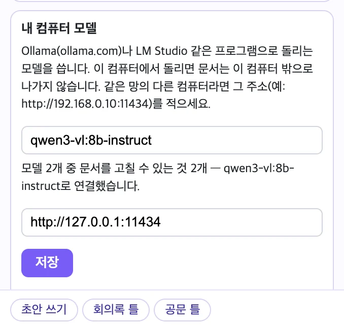
- 답이 오는 대로 보이고, 도는 동안 보내기 단추가 멈춤으로 바뀝니다. 고칠 안은 적용을 눌러야 문서에 들어가고, ⌘Z 로 되돌립니다.
- 글을 고르고 오른쪽 클릭하면 하이퍼 AI 로 바로 다듬을 수 있습니다.
- 하이퍼 AI 연결은 무료입니다. AI 사용료는 내 키로 Anthropic 에 냅니다.
AI 에이전트로 문서 고치기 (MCP)
Claude Code·Claude Desktop 같은 AI 에이전트에 하이퍼세븐 오피스를 붙이면, 에이전트가 한글·워드·엑셀·파워포인트 파일을 직접 읽고 고칩니다. 앱 안에 들어 있어 따로 설치할 것은 없습니다.
를 누르면 붙이는 명령이 나옵니다. Claude Code 는 첫 칸의 명령을 터미널에서 한 번 실행합니다. Claude Desktop 은 둘째 칸의 내용을 설정 파일(claude_desktop_config.json)의 mcpServers 에 넣고 다시 켭니다. 칸 옆의 복사로 복사합니다.
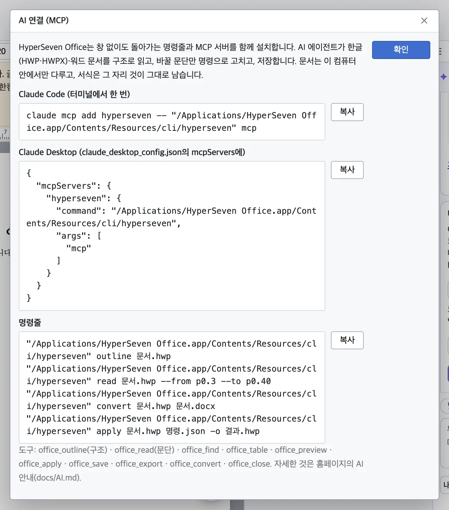
에이전트에게 말로 시킵니다. 예: ‘안내문.hwp 에서 이전 날짜를 다음 달 15일로 바꿔 줘’. 에이전트는 문서의 구조를 보고(office_outline), 필요한 문단만 읽고(office_read), 바꿀 곳만 고친 뒤(office_apply) 저장합니다(office_save).
고친 파일을 로 열어 봅니다. 시킨 말만 바뀌고, 제목의 크기·굵기 같은 서식은 그대로입니다.
- 원본과 같은 이름으로 저장하면 이전 파일을 .bak 으로 하나 남깁니다.
- 엑셀·파워포인트도 같은 도구로 고칩니다. 도구와 명령 목록, 명령줄 쓰는 법은 AI 에이전트 연결에 있습니다.
- 문서는 이 컴퓨터 안에서만 다룹니다. 하이퍼세븐 오피스가 문서를 밖으로 보내지 않고, 에이전트가 읽은 글만 그 에이전트의 AI 로 갑니다.
문제 알리기
이상한 점이 보이면 앱에서 바로 알립니다. 무엇을 했는지 몇 줄 적으면 고치는 데 큰 도움이 됩니다.
를 누르고, 겪은 일을 적어 보내기를 누릅니다. 문서 내용은 보내지 않습니다. 그림을 붙일지는 직접 고릅니다.
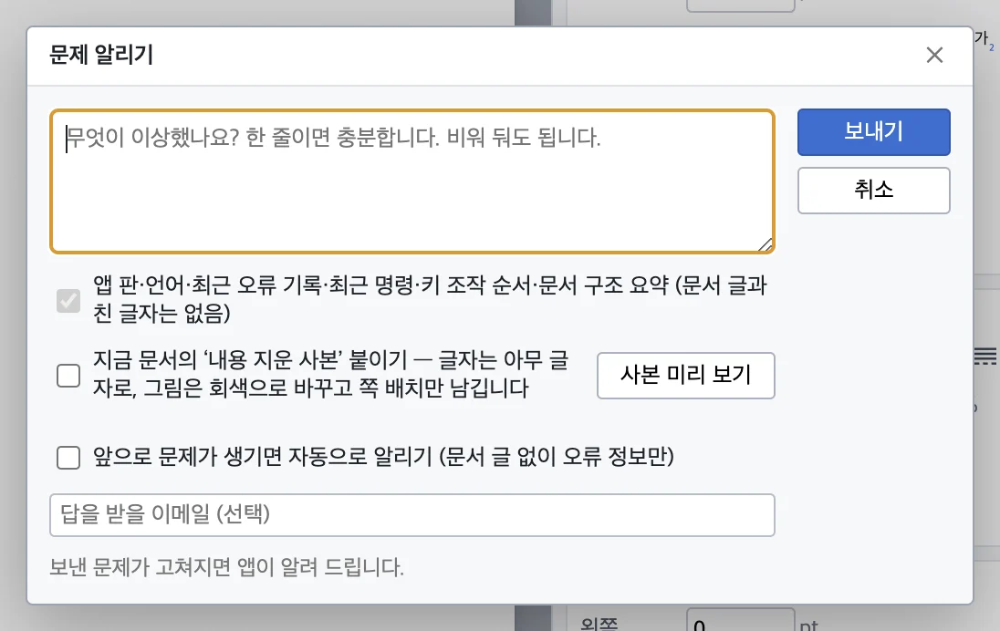
- 저장하지 않고 앱이 꺼져도, 다시 켜면 되찾을지 묻습니다. 되찾기를 누르면 마지막으로 친 글이 돌아옵니다.
열기와 저장
주고받는 파일 그대로
받은 파일을 그대로 열고, 상대가 쓰는 형식으로 저장합니다. 상대는 쓰던 프로그램에서 그대로 엽니다.
| 형식 | 열기 | 저장 |
|---|---|---|
| 한글 HWP (5.x) | 됨 · 배포용 문서는 읽기만 | HWP |
| 한글 HWPX | 됨 · 암호 문서도 | HWPX |
| 워드 DOCX | 됨 | DOCX · 원본 구조를 지키며 |
| 옛 워드 DOC · RTF · ODT | 됨 | DOCX로 새로 저장 (원본은 그대로) |
| 엑셀 XLSX · XLSM | 됨 | 그 형식 그대로 |
| 옛 엑셀 XLS · ODS · HTML 표 | 됨 | XLSX로 저장 |
| CSV · TSV | 됨 | CSV (시트가 여럿이면 알림) |
| 파워포인트 PPTX | 됨 | PPTX |
| 옛 파워포인트 PPT | 됨 | PPTX로 새로 저장 |
| 됨 | 원본 위에 고친 것만 덧씌워 저장 | |
| 텍스트 · 마크다운 · HTML | 됨 | TXT · HTML |
열지 못하는 것: 암호를 건 HWP 5.x, DRM·공인 인증서로 잠근 문서, HWP 3.0 이하, Word 95 이전 문서. 이런 파일이나 다른 프로그램 형식(Pages·Numbers·Keynote·한셀·한쇼 등)을 열면 이유를 알려 줍니다.
여는 법
- ⌘O, 또는 Finder에서 두 번 누릅니다. 여러 파일을 한꺼번에 열면 한 창의 탭으로 열립니다.
- 창에 끌어다 놓아도 됩니다. 글꼴 파일은 글꼴로 더해지고, 그림은 놓은 자리에 들어갑니다.
- 에 10개까지 남습니다.
저장
- ⌘S, ⇧⌘S.
- 에서 HWP · HWPX · DOCX · PDF · HTML · TXT · PNG를 고릅니다. PNG는 지금 쪽이나 모든 쪽을 150 또는 300dpi로 냅니다.
- PDF로 저장하면 글자는 벡터로 남고, 개요는 책갈피로, 하이퍼링크는 누를 수 있는 링크로 들어갑니다.
- 저장한 파일을 다시 읽어 원래 문서와 비교하고, 다르면 알려 줍니다. 형식을 바꾸면서 빠지는 내용이 있으면 저장하기 전에 묻습니다.
새 문서와 문서마당
- ⌘N는 함초롬바탕 10pt, 줄 간격 160%, A4로 시작합니다.
- ⌃N, D로 HWP · HWPX · DOCX 가운데 형식을 정해 새로 만듭니다.
- ⌃⌥N에는 빈 문서, 공문(기안문), 보고서(개조식), 회의록, 출장 신청서, 휴가 신청서, 이력서, 안내문이 있습니다. 첫 쪽을 미리 보고 두 번 누르면 엽니다.
- 로 이 문서를 발표로 만들고, ·로 다른 종류를 새로 엽니다. 위쪽 신호등의 글·셈·발표를 눌러도 됩니다.
자동 저장과 복구
기본으로 1분마다 자동 저장하고, 의 파일에서 1~60분으로 바꿉니다. 자동 저장본은 이 맥 안에만 둡니다. 앱이 갑자기 꺼졌다면 다음에 켤 때 ‘문서 복구’ 창이 뜹니다. 복구한 글 문서는 ‘…(복구됨)’이라는 이름으로 열립니다. PDF와 암호 문서는 자동 저장하지 않습니다.
문서 암호
- 암호 문서를 열면 암호를 묻습니다. 옛 doc·xls·ppt, 오피스(DOCX·XLSX·PPTX) 암호 문서, HWPX 암호 문서를 엽니다.
- 로 암호를 정하거나 바꾸거나 풉니다. 4글자 이상이어야 하고, HWPX · DOCX · XLSX · PPTX에 걸 수 있습니다. HWP 에는 걸 수 없습니다.
- 암호 PDF는 암호를 넣으면 볼 수 있지만, 고쳐서 저장하거나 쪽을 정리할 수는 없습니다.
글 문서 쓰기
글자와 문단
- 글자 모양 ⌘L — 기본 탭에서 글꼴·크기·장평·자간·글자 위치와 속성(진하게·기울임·밑줄·취소선·외곽선·그림자·양각·음각·첨자)을, 확장 탭에서 그림자·밑줄·강조점·커닝을 정합니다. 테두리/배경 탭이 따로 있습니다.
- 문단 모양 ⌘T — 정렬, 여백, 첫 줄, 줄 간격, 문단 위·아래 간격, 줄 나눔 기준(한글 어절·글자, 영어 단어·하이픈·글자)을 정합니다. 확장 탭에는 외톨이줄 보호, 다음 문단과 함께 같은 아홉 가지 설정이 있습니다.
- 스타일 F6 — 목록에서 적용하고 더하고 고칩니다. 스타일을 고치면 그 스타일을 쓰는 문단이 함께 바뀝니다. 스타일 1~10은 ⌃1~⌃0로 바로 씁니다.
- 문단 번호와 개요 — , , 한 수준 증가·감소로 번호를 매깁니다.
넣기
- 그림 ⌃N, I — bmp · gif · jpg · png · webp · svg. 개체 속성에서 회색조·흑백, 밝기·대비, 자르기를 합니다.
- 도형 — 에서 고르고 쪽 위에서 끌어 그립니다. 그냥 누르면 기본 크기로 들어갑니다.
- 글상자 ⌃N, B · 수식 ⌃N, M(한글 수식 스크립트) · 문자표 ⌘F10 · 한자 ⌘F9
- 각주 ⌃N, N · 미주 ⌃N, E · 책갈피 ⌃K, B · 하이퍼링크 ⌃K, H · 상호 참조 ⌃K, R · 누름틀 ⌃K, E
- 차트 — 문서 안의 차트는 그림으로 저장되고, 두 번 누르면 다시 고칩니다.
- 메모 — 에서 넣고 고치고 지웁니다. 작성자 이름은 환경 설정의 사용자 이름을 씁니다.
찾기와 바꾸기
⌘F, ⇧⌘H. 대소문자 구별, 온전한 낱말, 띄어쓰기 무시, 아무개 문자(? *), 정규식을 고를 수 있습니다. ⌘G로 다시 찾고, ⌥G로 쪽·줄·구역·책갈피를 찾아갑니다.
그 밖에
- 차례와 색인 — , .
- 메일 머지와 라벨 — .
- 서식 자동 채우기 — 성명·소속·연락처 같은 빈칸을 에 적어 둔 값으로 채웁니다.
- 문서 비교와 개인 정보 찾아서 가리기 — 메뉴에 있습니다.
- 시트 값 연결 — 셈에서 한 값을 문서에 하고, 시트가 바뀌면 으로 맞춥니다.
- 문서 끼워 넣기 ⌃O — 다른 문서를 지금 자리에 넣습니다.
표
- 만들기 ⌃N, T — 기본 5줄 5칸이고, 줄은 500, 칸은 62까지 됩니다. 글을 고른 뒤 로도 만듭니다.
- 칸 고르기 — 표 안에서 F5로 셀 블록을 시작하고, ⇧F5로 범위를 넓힙니다. 셀 블록에서 ⇧+방향키는 칸 크기를 바꿉니다.
- 블록에서 한 글자로 — M 합치기, S 나누기, L 테두리, C 배경, P 표/셀 속성, H·W 높이·너비를 같게, A 자동 채우기.
- 줄과 칸 — ⌃Return 줄 추가, ⌃⌫ 줄 지우기, ⌃I·⌃D 줄/칸 추가·지우기 창.
- 크기 — 표의 선을 끌면 칸 너비와 줄 높이가 바뀝니다. 칸 사이 선은 표 너비를 그대로 두고, 오른쪽 끝선은 표를 넓힙니다. 되돌리기 한 번으로 돌아옵니다.
- 계산 — ⌃N, F에서 SUM · AVG · PRODUCT · MIN · MAX · COUNT를 LEFT · RIGHT · ABOVE · BELOW나 A1 같은 칸 이름과 함께 씁니다. 계산한 값이 글로 들어갑니다. 블록 합계·평균·곱은 셀 블록에서 ⌃⇧S·⌃⇧A·⌃⇧P.
- 꾸미기 — 표 마당 10가지, 셀 테두리/배경, 정렬(기준 3개까지), 1,000 단위 쉼표, 표 나누기 ⌃N, A와 붙이기 ⌃N, Z.
쪽과 인쇄
- 편집 용지 F7 — A4 · A3 · A5 · B4 · B5 · 레터 · 리걸 · 신국판 · 사용자 정의, 방향, 제본(한쪽·맞쪽·위로), 여백 일곱 가지, 적용 범위(현재 구역·문서 전체).
- 머리말/꼬리말 ⌃N, H — 양 쪽·짝수 쪽·홀수 쪽을 따로 둘 수 있습니다. 다 쓰면 ⇧Esc로 본문에 돌아옵니다.
- 쪽 번호 ⌃N, P — 위치 11가지, 모양 17가지, 줄표와 앞뒤 장식 문자, 시작 번호. 이 쪽에서만 감추려면 ⌃N, S.
- 다단 — 1~10단, 일반·배분·평행 다단과 구분선.
- 나누기 — 쪽 ⌃Return, 단 ⌃⇧Return, 다단 ⌃⌥Return, 구역 ⌥⇧Return.
- 쪽 테두리/배경, 바탕쪽, 각주/미주 모양, 구역 설정 ⌃N, G도 메뉴에 있습니다.
인쇄
⌘P에서 범위(모두·현재 쪽·현재 구역·일부분 — 예: 1-3, 5, 7~9), 홀수·짝수 쪽, 끝 쪽부터 거꾸로, 모아 찍기(2·4·6·8·9·16쪽), 소책자 모양, 글씨 워터마크를 고릅니다. 같은 창에서 PDF로 저장도 됩니다. 마지막 설정은 기억해 둡니다. 에서는 ← →로 쪽을 넘깁니다.
맞춤법과 교정
- 빨간 물결 밑줄 — 맞춤법 도우미가 기본으로 켜져 있어, 쓰는 동안 틀렸을 수 있는 말에 밑줄을 긋습니다. 밑줄 친 말을 오른쪽 단추로 누르면 고칠 말이 나옵니다. 인쇄와 PDF 에는 나오지 않고, 로 끕니다.
- 맞춤법 검사 F8 — 커서 뒤부터 한 곳씩 보여 줍니다. 바꾸기 · 모두 바꾸기 · 건너뛰기 · 모두 건너뛰기 · 사전에 더하기를 고릅니다.
- 내 맞춤법 사전 — 자주 쓰는 이름과 용어를 5,000개까지 더해 둡니다. 조사가 붙어도 알아봅니다. 문서에서 세 번 넘게 되풀이되는 말에는 밑줄을 긋지 않습니다.
- 빠른 교정과 한/영 자동 전환 — 기본으로 켜져 있습니다. 빠른 교정 내용은 ⇧F8.
- 글자 수 세기 — .
맞춤법은 글 문서에서만 봅니다(셈·발표·PDF는 아직). 낱말 하나하나를 사전에 비추는 방식이라 문맥에 따른 교정과 띄어쓰기 전반은 보지 않습니다. 사전은 hunspell-dict-ko 0.7.94 입니다.
셈 (엑셀)
엑셀 파일(XLSX·XLSM·XLS·ODS·CSV, 은행에서 받은 HTML 표)은 셈로 열립니다. 저장하면 손대지 않은 칸과 서식은 원본 그대로 남습니다.
- 함수 — 420여 개. 목록에 없는 함수가 든 칸은 파일에 저장된 값을 그대로 보여 줍니다. XLSX는 열 때 다시 계산하지 않고 저장된 값을 씁니다.
- 셀 서식 ⌘1 — 표시 형식 · 맞춤 · 글꼴 · 테두리 · 채우기. 금액을 한글로 쓰는 표시 형식도 있습니다.
- 조건부 서식 — 셀 강조, 상위/하위, 데이터 막대, 색조, 수식으로 지정, 규칙 관리.
- 데이터 — 정렬, 필터 ⌘⇧L, 텍스트 나누기, 중복된 항목 제거, 데이터 유효성 검사, 이름 관리자, 피벗 테이블(SUMIFS 같은 수식으로 만들어집니다).
- 차트 — 세로 막대 · 가로 막대 · 꺾은선 · 원 · 영역 · 분산형. 엑셀의 표준 차트로 저장됩니다.
- 보기 — 틀 고정(첫 행·첫 열), 눈금선. 시트 탭을 오른쪽 단추로 누르면 이동·탭 색.
- 문서로 연결 — 한 뒤 문서나 발표에 붙이면, 시트가 바뀔 때 으로 따라옵니다.
- 인쇄 — 지금 시트만 찍고, 파일에 저장된 용지·여백·배율·인쇄 제목을 따릅니다. 셈에서 정할 수 있는 것은 입니다.
| 셈 키 | 기능 |
|---|---|
| ⌘+방향 · ⇧+방향 | 자료 끝으로 가기 · 고른 범위 넓히기 |
| F2 · Delete | 칸 고치기 · 내용 지우기 |
| ⌘D · ⌘R | 아래로 · 오른쪽으로 채우기 |
| ⌘; · ⌘⇧; | 오늘 날짜 · 지금 시각 |
| ⌘1 | 셀 서식 |
| ⌘⇧1 ⌘⇧4 ⌘⇧5 | 숫자 · 통화 · 백분율 표시 |
| ⌘- · ⌘⇧= | 셀 삭제 · 삽입 |
| ⌥= | 자동 합계 |
| ⌘PageUp · ⌘PageDown | 앞뒤 시트로 |
| ⇧F11 | 시트 삽입 |
| F4 (수식 입력 줄) | 참조의 $ 바꾸기 |
셈에서는 ⌘와 ⌃가 같은 일을 합니다.
발표 (파워포인트)
파워포인트 파일(PPTX·PPSX·POTX, 옛 PPT)은 발표로 열립니다. 옛 PPT는 PPTX로 새로 저장합니다.
- 새 발표 — 테마 네 가지(기본·밤하늘·한지·청자)와 레이아웃 일곱 가지로 시작합니다.
- 한글 문서로 발표 만들기 — 글 문서에서 . 제목과 본문이 슬라이드가 되고, 슬라이드를 오른쪽 단추로 누르면 원본 문단으로 갑니다.
- 편집 — 글상자, 도형, 그림, 표를 넣고 맞춤·앞뒤 순서·묶기·회전을 씁니다. ⌘M(또는 ⌃M) 새 슬라이드, ⌘D 복제, ⌘G·⌘⇧G 묶기·풀기, Return이나 F2로 글 고치기. 방향키로 옮기고 ⇧를 함께 누르면 10배씩 움직입니다.
- 애니메이션 — 나타내기 다섯, 강조 둘, 끝내기 네 가지. 클릭할 때 · 이전 효과와 함께 · 이전 효과 다음에 시작합니다. 화면 전환은 여덟 가지입니다.
발표하기
| 키 | 기능 |
|---|---|
| F5 · ⇧F5 | 처음부터 · 현재 슬라이드부터 |
| ⌥F5 | 발표자 보기 — 지금·다음 슬라이드, 메모, 지난 시간 |
| → Space Return · 클릭 | 다음 |
| ← ⌫ | 이전 |
| 번호 + Return | 그 슬라이드로 |
| B · W | 검은 화면 · 흰 화면 |
| Esc | 끝내기 |
모니터가 둘이면 청중 화면은 다른 모니터 전체에 띄우고, 이 화면에는 발표자 보기를 띄웁니다.
PDF를 열면 메뉴에 ‘PDF’가 붙습니다. 처음부터 끝까지 해 보려면 받은 PDF 고치고 서명하기를 따라 합니다.
- 주석 — 글에 칠하기(형광펜·밑줄·취소선), 메모, 그리기(펜·사각형·타원·선·화살표), 글상자, 그림 넣기, 서명 넣기. 고른 주석은 Delete로 지우고 방향키로 옮깁니다.
- 글·그림 고치기 — 본문 글자를 고치고 찾아 바꿉니다.
- 쪽 정리 — 쪽 지우기, 빈 쪽 넣기, 다른 PDF의 쪽 넣기(합치기), 고른 쪽을 새 PDF로, 쪽 순서 바꾸기, 쪽 돌리기.
- 한글 문서로 바꾸기 — PDF를 글 문서로 바꿔 자유롭게 편집합니다. 선이 없는 표 같은 곳에서는 모양이 달라질 수 있습니다.
- 저장 — 원본 위에 고친 것만 덧씌워 저장합니다.
세로쓰기, 돌린 글, 스캔한 쪽은 글을 고칠 수 없습니다. 암호 PDF는 볼 수 있지만 고쳐서 저장하거나 쪽을 정리할 수 없습니다.
글꼴
- 글꼴 상자에서 글꼴마다 그 모양으로 보며 고릅니다. 이 문서의 글꼴, 최근 쓴 글꼴, 한글·워드 글꼴, 이 컴퓨터의 모든 글꼴을 이름이나 초성으로 찾습니다.
- 글꼴 파일(.ttf·.otf)을 창에 끌어다 놓거나 로 더합니다. 에서 글꼴 폴더를 열고 빼냅니다.
- 나눔고딕·나눔명조·Pretendard·송명이 함께 들어 있습니다.
- 문서에 쓴 글꼴이 없으면 비슷한 글꼴로 보이되, 줄 바꿈은 원래 글꼴의 글자 폭대로 맞춥니다. 한글이 설치된 맥이면 함초롬체 같은 한글 글꼴을 함께 씁니다.
하이퍼 AI
메뉴 막대의 AI 단추나 로 오른쪽에 엽니다. 문서·셈·발표를 읽고, 말로 시킨 일을 고칠 안으로 냅니다. 처음 켜는 법은 하이퍼 AI 켜기에 있습니다.
연결하는 법
- 로그인 — 애플·구글·카카오로 로그인하면 연결을 켤 수 있습니다. 연결은 무료입니다.
- 내 Claude API 키 — 창 위 톱니(⚙)의 설정에 Anthropic API 키(
sk-ant-…)를 넣습니다. 키는 이 컴퓨터의 열쇠고리에 암호화해 두고, 쓴 만큼의 사용료는 내 Anthropic 계정에 붙습니다. - 내 컴퓨터 모델 — 창 아래 단계 고르기에서 내 컴퓨터 모델 (Ollama)를 고르고 Ollama·LM Studio 의 주소를 적습니다. 이 컴퓨터에서 돌리면 문서가 밖으로 나가지 않고 사용료가 없습니다. 같은 망의 다른 컴퓨터(예:
http://192.168.0.10:11434)도 됩니다.
쓰는 법
- 단계 — 창 아래에서 자동·하이퍼 AI 라이트·하이퍼 AI·하이퍼 AI 프로·하이퍼 AI 맥스를 고릅니다. 자동이면 요청을 보고 고르고, 높을수록 꼼꼼하지만 오래 걸리고 사용료가 큽니다.
- 실시간 답과 멈춤 — 답이 쓰는 대로 보이고, 도는 동안 보내기 단추가 멈춤이 됩니다.
- 적용 — 고칠 안은 카드로 나옵니다. 하나씩 골라 적용을 눌러야 문서가 바뀌고, 카드를 누르면 문서의 그 자리로 갑니다. ⌘Z로 되돌립니다.
- 오른쪽 클릭 — 글을 고르고 오른쪽 클릭하면 그 부분만 하이퍼 AI 로 다듬습니다.
- 첨삭과 함께 — 첨삭 펜으로 표시한 뒤 ‘첨삭대로 고쳐 줘’라고 하면 표시한 자리를 읽습니다.
- 말로 시키기 — 마이크 단추로 받아쓰기합니다.
- 고른 부분만 보낼 수 있고, 복사를 막은 배포용 문서는 보내지 않습니다.
계정·응원
모든 기능을 무료로 씁니다. 편집 기능은 로그인 없이 쓰고, 로그인은 하이퍼 AI 연결에 씁니다.
- 로그인 — 메뉴 막대 오른쪽의 로그인에서 애플·구글·카카오 중 하나로 합니다. 오피스와 캐드는 같은 계정을 씁니다.
- 하이퍼 AI — 로그인한 뒤 내 Claude API 키나 내 컴퓨터 모델을 연결해 무료로 씁니다. AI 사용료는 내 키로 Anthropic 에 냅니다.
- 응원하기 — 메뉴 막대의 ♥ 응원이나 에서 커피 한 잔으로 응원할 수 있습니다. 응원하기 쪽에 비트코인 주소도 있습니다.
AI 에이전트 연결 (MCP · 명령줄)
앱 안에 창 없이 돌아가는 명령줄 도구와 MCP 서버가 들어 있습니다. 따로 설치할 것은 없습니다. Claude Code·Claude Desktop 같은 에이전트가 한글(HWP·HWPX)·워드·엑셀·파워포인트 파일을 구조로 읽고, 바꿀 곳만 명령으로 고쳐 저장합니다. 붙이는 순서는 AI 에이전트로 문서 고치기에 그림과 함께 있습니다.
붙이기
에서 아래 명령을 복사할 수 있습니다.
claude mcp add hyperseven -- "/Applications/HyperSeven Office.app/Contents/Resources/cli/hyperseven" mcp
Claude Desktop은 claude_desktop_config.json 의 mcpServers 에 넣습니다.
"hyperseven": {
"command": "/Applications/HyperSeven Office.app/Contents/Resources/cli/hyperseven",
"args": ["mcp"]
}
윈도우는 같은 창에 나오는 명령을 그대로 복사합니다. 앱 실행 파일(HyperSeven Office.exe)에 ELECTRON_RUN_AS_NODE=1 을 붙여 resources\cli\hyperseven.cjs 를 넘기는 모양입니다 — 많은 에이전트가 .cmd 파일을 바로 띄우지 못해서입니다. 사람이 쓰는 명령줄은 설치 폴더의 resources\cli\hyperseven.cmd 입니다.
도구와 순서
office_outline(구조만) → office_read(문단 범위, 주소 p0.12) → office_find · office_table → office_preview / office_apply(명령) → office_save. 그 밖에 office_export · office_convert · office_close.
글 문서 명령은 replace_text · set_paragraph · insert_paragraphs · fill_field · set_cell 입니다. 서식은 보내지 않고, 그 자리 서식이 그대로 남습니다. 엑셀·파워포인트도 같은 도구로 다루고(set_cells · add_sheet · add_slide · set_shape_text 등), 암호 파일은 password 를 넘깁니다.
명령줄
hyperseven outline 문서.hwp hyperseven read 문서.hwp --from p0.3 --to p0.40 hyperseven convert 문서.hwp 문서.docx hyperseven apply 문서.hwp 명령.json -o 결과.hwp # --dry로 미리 보기
- 원본과 같은 경로에 저장하면
.bak을 남깁니다. - 배포용 문서는 열지 않습니다. PDF는 명령줄에서 다루지 않고, 쪽 배치와 PDF 저장은 앱에서 합니다.
- 에이전트를 위한 요약은 llms.txt 에 있습니다.
단축키
윈도우판은 한글 Windows 방식 키를 씁니다. 한글에서 쓰던 그대로이고, 아래 표는 맥 키입니다 — 윈도우 키 목록은 에서 봅니다.
맥에서는 ‘한글 Mac 방식’ 키가 먼저이고, 겹치지 않는 한글 Windows 키도 함께 됩니다. 에서 ‘Windows 한글 방식 우선’으로 바꾸거나 키를 하나씩 바꿀 수 있습니다.
겹글쇠 — ⌃N, T는 ⌃N을 누르고 4초 안에 T를 누르는 것입니다. 둘째 키는 ⌃를 누른 채여도 됩니다.
F1~F12는 맥 키보드 설정에 따라 fn과 함께 눌러야 할 수 있습니다. ⌘Q ⌘H ⌘M ⌘Tab ⌘Space처럼 macOS가 먼저 쓰는 키는 바꿀 수 없습니다.
파일 · 편집
| 기능 | 키 |
|---|---|
| 새 문서 · 문서마당 | ⌘N · ⌃⌥N |
| 불러오기 · 문서 끼워 넣기 | ⌘O · ⌃O |
| 저장 · 다른 이름으로 | ⌘S · ⇧⌘S |
| 편집 용지 · 인쇄 | F7 · ⌘P |
| 문서 닫기 · 끝 | ⌘W · ⌘Q |
| 되돌리기 · 다시 실행 | ⌘Z · ⇧⌘Z |
| 골라 붙이기 · 모양 복사 | ⌃⌥V · ⌥C |
| 블록 · 칸 블록 · 개체 선택 | F3 · F4 · F11 |
| 찾기 · 찾아 바꾸기 | ⌘F · ⇧⌘H |
| 다시 찾기 · 거꾸로 찾기 · 찾아가기 | ⌘G · ⇧⌘G · ⌥G |
| 문단 위로 · 아래로 옮기기 | ⌥⇧↑ · ⌥⇧↓ |
보기 · 입력
| 기능 | 키 |
|---|---|
| 확대 · 축소 | ⌘= · ⌘- |
| 쪽 맞춤 · 폭 맞춤 · 100% | ⌃G, P · ⌃G, W · ⌃G, Q |
| 조판 부호 · 문단 부호 | ⌃G, C · ⌃G, T |
| 전체 화면 | ⌃⌘F |
| 표 · 그림 · 글상자 | ⌃N, T · ⌃N, I · ⌃N, B |
| 수식 · 캡션 | ⌃N, M · ⌃N, C |
| 각주 · 미주 | ⌃N, N · ⌃N, E |
| 문자표 · 한자 | ⌘F10 · ⌘F9 |
| 날짜 문자열 · 날짜 코드 | ⌃K, D · ⌃K, C |
| 책갈피 · 하이퍼링크 · 누름틀 | ⌃K, B · ⌃K, H · ⌃K, E |
| 줄 나누기 · 묶음 빈칸 | ⇧Return · ⌃⌥Space |
서식 · 문단 · 쪽
| 기능 | 키 |
|---|---|
| 글자 모양 · 문단 모양 · 스타일 | ⌘L · ⌘T · F6 |
| 진하게 · 기울임 · 밑줄 | ⌘B · ⌘I · ⌘U |
| 위 첨자 · 아래 첨자 · 보통 모양 | ⌃⌘P · ⌃⌘S · ⌃⌘C |
| 글자 크게 · 작게 | ⇧⌘E · ⇧⌘R |
| 자간 넓게 · 좁게 | ⇧⌘W · ⇧⌘N |
| 장평 넓게 · 좁게 | ⇧⌘K · ⇧⌘J |
| 스타일 1~10 | ⌃1 ~ ⌃0 |
| 양쪽 · 왼쪽 · 가운데 · 오른쪽 정렬 | ⌃⇧M · ⌃⇧L · ⌃⇧C · ⌃⇧R |
| 줄 간격 넓게 · 좁게 | ⌥⇧Z · ⌥⇧A |
| 빠른 내어 쓰기 | ⇧Tab |
| 머리말/꼬리말 · 쪽 번호 | ⌃N, H · ⌃N, P |
| 쪽 나누기 · 단 나누기 | ⌃Return · ⌃⇧Return |
| 명령 찾기 | ⌘K |
| 맞춤법 · 단축키 도움말 · 환경 설정 | F8 · ⇧⌘/ · ⌘, |
커서 옮기기
| 기능 | 키 |
|---|---|
| 줄 처음 · 끝 | ⌘← · ⌘→ |
| 낱말 단위 | ⌥← · ⌥→ |
| 문단 단위 | ⌘↑ · ⌘↓ |
| 한 쪽씩 | ⌥⌘↑ · ⌥⌘↓ |
| 문서 처음 · 끝 | ⌘PageUp · ⌘PageDown |
| 낱말 지우기 · 앞 낱말 지우기 | ⌘⌫ · ⌥⌫ |
설정과 정보
- 환경 설정 ⌘, — [편집] 빠른 교정, 한/영 자동 전환, 맞춤법 도우미 · [파일] 자동 저장과 간격, 최근 문서 지우기 · [보기] 화면 테마, 작업 창, 언어(한국어·English) · [사용자] 이름(메모 작성자), 내 정보(서식 자동 채우기).
- 단축키 설정 — 이름이나 키로 찾고, 분류별로 보거나 ‘바꾼 것만’ 거릅니다. 칩을 눌러 키를 바꾸고, ＋ 로 하나 더 붙이고, × 로 지웁니다. 언제든 기본값으로 돌아갑니다.
- 이용 정보 — 에서 판 번호와 서버 확인 상태를 봅니다.
- 앱 정보 — 판 번호와 함께 든 글꼴·사전의 출처와 라이선스를 봅니다.
문제가 생겼을 때
하이퍼세븐은 쓰는 사람과 함께 만듭니다. 걸리는 곳이 있으면 한 줄로 알려 주세요.
앱이 열리지 않아요
처음 열 때의 순서를 따릅니다. “이 Mac에서 지원되지 않음”이라고 나오면 인텔 맥에 Apple Silicon용을 받은 것입니다. 홈페이지 내려받기 단추 아래의 인텔 맥용 다운로드로 다시 받아 바꿔 넣습니다.
문서가 한글과 다르게 보여요
대개 글꼴 때문입니다. 문서에 쓴 글꼴을 이 컴퓨터에 넣으면 더 비슷해집니다. 한컴 글꼴(함초롬체 등)은 한컴 누리집에서 무료로 받습니다. 그래도 다르면 문서와 함께 알려 주세요. 고치는 데 가장 큰 도움이 됩니다.
문제 알리기
(또는 ⌘K 에서 ‘문제 알리기’)를 누르고 한 줄만 쓰면 됩니다. 비워 둬도 됩니다. 앱 판과 오류 기록, 최근에 쓴 명령과 키 순서(무슨 글자를 쳤는지는 없음)가 저절로 붙고, 문서 글은 가지 않습니다.
- 문서 모양이 문제라면 ‘내용 지운 사본’을 붙여 주세요. 글자는 아무 글자로, 그림은 회색으로 바뀌고 쪽 배치만 남습니다. 보내기 전에 첫 쪽을 미리 봅니다.
- 오류가 나면 뜨는 알림의 알리기로도 보냅니다. 자동 알림을 켜 두면 다음부터는 오류 정보만 저절로 갑니다.
- 보낸 문제가 고쳐지면 앱이 알려 드립니다.
준비 중인 것
필요한 기능을 알려 주시면 다음 버전의 순서를 정하는 데 씁니다.
- 변경 내용 추적 — 워드 문서는 보기와 적용만 되고 새로 기록하지 않습니다. 한글 문서의 변경 추적은 없습니다.
- OLE 개체를 새로 만들 수 없고, 글맵시와 양식 개체에는 제한이 있습니다.
- 시트의 차트 꾸밈, 피벗 다시 계산, 다른 통합 문서 참조.
- 발표의 3D와 차트 고치기, wmv 같은 옛 미디어 재생.
- 문맥에 따른 맞춤법 교정과 띄어쓰기 전반.
하이퍼세븐 캐드 매뉴얼
캐드 매뉴얼은 준비 중입니다. 자주 쓰는 명령은 쓰는 중에 F1을 누르면 쓰는 법이 보이고, ⌘K(윈도우 Ctrl+K) 찾기에서도 도구와 자주 쓰는 명령은 하는 일이 함께 보입니다. 기능 소개는 캐드 쪽에 있습니다.